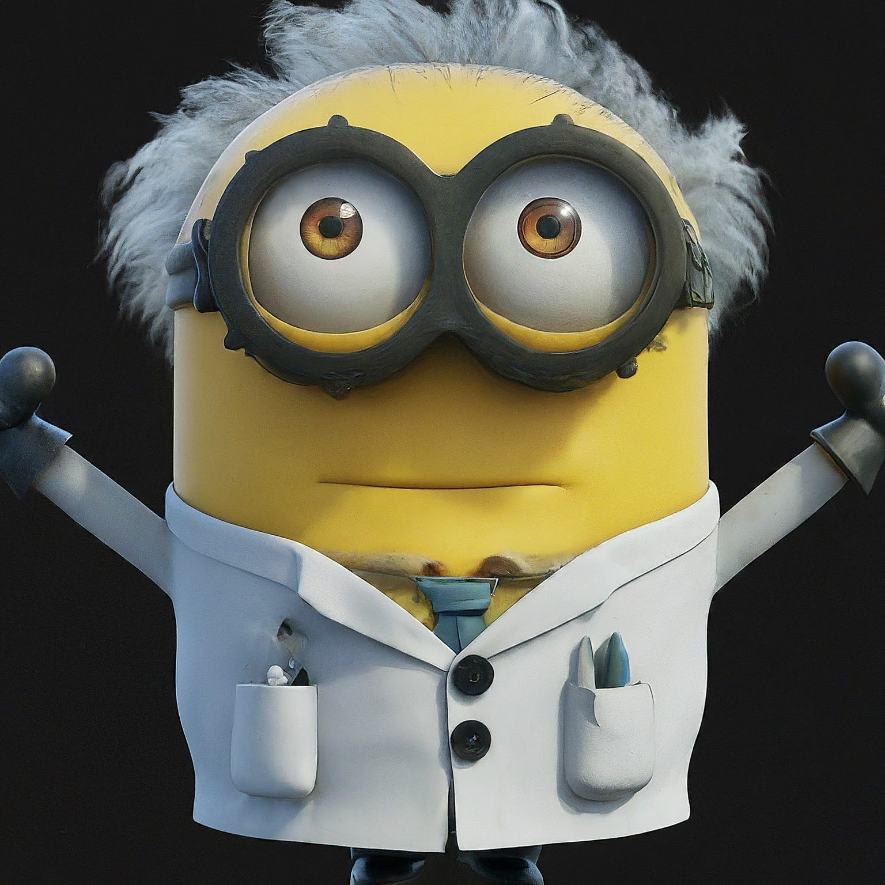

Minions are the small, yellow, cylindrical creatures that serve as the most recognizable and beloved characters from the "Despicable Me" franchise. Created by Pierre Coffin and Chris Renaud, these delightful beings have become cultural icons since their first appearance in 2010. Their quirky behavior, humorous language, and undying loyalty to their master, Gru, have made them favorites among audiences of all ages.
Language and Communication
One of the most endearing aspects of the Minions is their unique language, often referred to as "Minionese." This language is a playful mix of various languages, including English, Spanish, French, and Italian, along with gibberish and sounds. Although their speech is mostly nonsensical, audiences can usually infer their meaning through context, tone, and body language. This inventive form of communication adds a layer of humor and universal appeal, as it transcends language barriers.
Personality and Traits
Minions are characterized by their childlike innocence, curiosity, and playful nature. They are easily amused, often finding joy in the simplest of things, such as bananas, which they are famously obsessed with. Their antics and slapstick humor are a significant source of comic relief in the "Despicable Me" series. Despite their mischievous behavior, Minions are inherently good-hearted and display a strong sense of loyalty and camaraderie.

Cultural Impact
The Minions have had a significant impact on popular culture, transcending the "Despicable Me" franchise. They have appeared in various forms of media, including video games, merchandise, and theme park attractions. Their image is instantly recognizable, making them a popular choice for memes, social media posts, and advertising campaigns. The Minions' widespread appeal can be attributed to their universal humor, relatable personalities, and the nostalgic charm of classic slapstick comedy.
Biker Minion
In the role of Biker Minion, their personality reflects a blend of fearlessness and playfulness. They exude confidence and a sense of freedom, always eager to explore new horizons. Despite their tough exterior, their inherent Minion traits of curiosity and humor remain evident. They might be seen performing daring stunts or engaging in playful antics, all while maintaining their biker cool.
Origins and Design
The Minions were originally designed to be simple and easily recognizable. Standing at around 3 feet tall, they have a distinctive appearance characterized by their yellow skin, blue overalls, and goggles that vary between one and two eyes. Their design was intentionally kept simple to allow for a wide range of expressions and physical comedy. Despite their uniform appearance, Minions come in slightly different shapes and sizes, adding to their charm and individuality.
Role in the "Despicable Me" Franchise
The Minions made their debut in the animated film "Despicable Me" (2010), where they serve as loyal followers of Gru, a supervillain with a heart of gold. Their primary role is to assist Gru in his schemes, often leading to comedic mishaps due to their clumsiness and naivety. Despite their tendency to cause chaos, the Minions are dedicated and hardworking, always striving to please Gru. Their popularity was so immense that they were given their own spin-off film, "Minions" (2015), which explores their history and quest to find the perfect master to serve. The film takes viewers through the Minions' journey from prehistoric times to the 1960s, highlighting their encounters with various potential masters before eventually meeting Gru. The spin-off was a massive success, further cementing the Minions' place in popular culture.
"Minions'
are the ingreadient of happiness. "
Cook Minion
Cook Minion is the culinary expert among the Minions, always ready to whip up a delicious meal. Wearing a chef’s hat and apron, Cook Minion is found in the kitchen, experimenting with various ingredients and recipes. Their cooking style is anything but conventional, often leading to chaotic but amusing results. Whether baking a cake or preparing a feast, Cook Minion’s kitchen antics are filled with laughter and unexpected culinary creations. Despite the mess they often create, Cook Minion’s passion for food and cooking shines through, making them a beloved character for those who enjoy culinary adventures.

Each specialized Minion—Doctor, Astronaut, Cook, and Scientist—brings a unique flavor to the Minion universe, showcasing their versatility and endless capacity for humor. Whether they are in a hospital, outer space, a kitchen, or a laboratory, these Minions continue to entertain and endear themselves to audiences with their charming personalities and amusing escapades. Through their various roles, Minions demonstrate that no matter the job, a little humor and a lot of heart can make any task more enjoyable.
Doctor Minion
Doctor Minion is one of the many delightful iterations of the Minions, characterized by their unique and quirky approach to the medical profession. Dressed in a white lab coat, a head mirror, and often seen with a stethoscope, Doctor Minion brings a humorous twist to the serious world of healthcare. Despite their clumsiness and propensity for mishaps, Doctor Minion is always eager to help and ensure the well-being of others, albeit in their distinctive, bumbling manner. Their attempts at medical procedures often result in hilarious outcomes, making them a source of comic relief in any setting.
Astronaut Minion
Astronaut Minion is the adventurous version of the Minions, ready to explore the vastness of space. Donning a space suit complete with a helmet, Astronaut Minion embodies the spirit of exploration and curiosity. Their mission is to venture into the unknown, whether it’s a space station or an alien planet. Despite their small size, Astronaut Minion dreams big, and their space escapades are filled with unexpected surprises and comedic twists. They bring a sense of wonder and fun to the concept of space travel, making it more accessible and entertaining for audiences.
Conclusion
In summary, Minions are more than just side characters in a film series; they are a cultural phenomenon. Their simple yet expressive design, unique language, and endearing personalities have captured the hearts of audiences worldwide. Whether causing chaos in Gru's lair or embarking on their adventures, the Minions continue to bring joy and laughter to people of all ages. As icons of modern animation, they stand as a testament to the power of humor and the enduring appeal of playful, lovable characters.